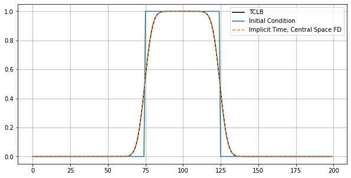

import h5py
import numpy as np
import matplotlib.pyplot as plt
from display_xml import XML
import CLB.CLBXMLWriter as CLBXML
Prepare FD and LBM solution¶
u_ic = np.zeros(200)
u_ic[75:-75] = 1
np.savetxt("initial.csv", u_ic, delimiter=",")
CLBc = CLBXML.CLBConfigWriter( )
CLBc.addGeomParam('nx', 200)
CLBc.addGeomParam('ny', 100)
CLBc.addRunR(eval=\
"""
init = read.table("initial.csv", header = FALSE, sep = "", dec = ".");
Solver$Fields$Init_DRE_1_External[] = init[,1];
Solver$Actions$InitFromExternalAction();
""")
params = {
"Diffusivity_DRE_1":0.1666,
"Init_DRE_1":-0.5
}
CLBc.addModelParams(params)
CLBc.addHDF5()
solve = CLBc.addSolve(iterations=200)
CLBc.addHDF5(Iterations=10, parent=solve)
CLBc.write('run.xml')
! tclb d2q9_reaction_diffusion_system_SimpleDiffusion run.xml > /dev/null && echo 'DONE!'
Hello allocator!
DONE!
def btcs(u_IC, nu, nx, nt, dt, dx):
un_icfd = u_IC.copy()
A = np.zeros((nx, nx))
Beta_FD = dt * nu / (dx**2)
# nt += 100
last_index_in_matrix = nx -1
# the BC - use one sided FD
A[0, 0] = 1-Beta_FD # forward FD
A[0, 1] = 2*Beta_FD # forward FD
A[0, 2] = -Beta_FD # forward FD
A[last_index_in_matrix, last_index_in_matrix-2] = -Beta_FD # backward FD
A[last_index_in_matrix, last_index_in_matrix-1] = 2*Beta_FD # backward FD
A[last_index_in_matrix, last_index_in_matrix] = 1-Beta_FD # backward FD
for i in range(1, last_index_in_matrix):
A[i, i-1] = -Beta_FD # left of the diagonal
A[i, i] = 1 + 2*Beta_FD # the diagonal
A[i, i+1] = -Beta_FD # right of the diagonal
A_inv = np.linalg.inv(A)
solution = list()
solution.append(u_ic)
for n in range(nt): #loop for values of n from 0 to nt, so it will run nt times
un_icfd = A_inv@un_icfd
solution.append(un_icfd)
return np.array(solution)
u_ic = np.loadtxt("initial.csv", delimiter=",")
SolutionFD = btcs(u_ic, 0.1666, u_ic.shape[0], 200, 1, 1)
SolutioLBM = list()
for i in range(0,200,10):
f = h5py.File('./output/run_HDF5_%08d.h5'%i)
SolutioLBM.append(f['DRE_1'][0,:,:])
SolutioLBM = np.array(SolutioLBM)
plt.figure(figsize=(10,5))
plt.plot(SolutioLBM[5,25,:].T, 'k-', label='TCLB');
plt.plot(SolutionFD[0,:], label='Initial Condition')
plt.plot(SolutionFD[50,:], '--', label='Implicit Time, Central Space FD')
plt.legend()
plt.grid(which='both')

Get FFT of both¶
plt.figure(figsize=(10,10))
s = u_ic
s_ic = np.fft.fft(s)
freq = np.fft.fftfreq(s.shape[-1])
#plt.plot(freq, s_ic.real, '--', freq, s_ic.imag, '--')
s = SolutionFD[50,:]
s_fd = np.fft.fft(s)
#freq = np.fft.fftfreq(s.shape[-1])
plt.plot(freq, s_fd.real, 'o', freq, s_fd.imag, 'o')
s = SolutioLBM[5,25,:].T
s_lbm = np.fft.fft(s)
#freq = np.fft.fftfreq(s.shape[-1])
plt.plot(freq, s_lbm.real, 'x', freq, s_lbm.imag, 'x')
[<matplotlib.lines.Line2D at 0x7f7cfa493220>,
<matplotlib.lines.Line2D at 0x7f7cfa4932e0>]

#Ref: https://people.maths.ox.ac.uk/trefethen/5all.pdf
plt.figure(figsize=(10,10))
omega = s_fd / s_ic
plt.plot(np.abs(freq), np.abs(omega), 'o', label='FDM')
omega = s_lbm / s_ic
plt.plot(np.abs(freq), np.abs(omega), 'x', label='LBM')
af = np.sort(np.abs(freq))
scale = 35
plt.semilogy(af, np.tanh(scale*af)/af/scale, '--', label='~Dispersion relation for laplace')
plt.legend()
plt.grid(which='both')
/tmp/ipykernel_6618/4255232911.py:2: RuntimeWarning: divide by zero encountered in true_divide
omega = s_fd / s_ic
/tmp/ipykernel_6618/4255232911.py:2: RuntimeWarning: invalid value encountered in true_divide
omega = s_fd / s_ic
/tmp/ipykernel_6618/4255232911.py:6: RuntimeWarning: divide by zero encountered in true_divide
omega = s_lbm / s_ic
/tmp/ipykernel_6618/4255232911.py:6: RuntimeWarning: invalid value encountered in true_divide
omega = s_lbm / s_ic
/tmp/ipykernel_6618/4255232911.py:11: RuntimeWarning: invalid value encountered in true_divide
plt.semilogy(af, np.tanh(scale*af)/af/scale, '--', label='~Dispersion relation for laplace')